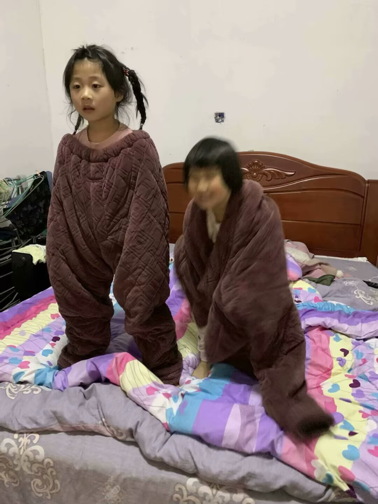

我叫星月仙女，当年在西山游玩散心，偶然遇上了溜土和飞土。她俩一个机灵灵动，一个憨厚稳重，三人一见面就聊得特别投缘，越相处越觉得亲切，干脆在西山脚下对着天地拜了三拜，结为了异姓姐妹，说好有福同享、有难同当。没过多久，西山里就出了大事。山中突然冒出一伙修炼成精的妖怪，占洞为王，四处抢东西、吓百姓，还把路过的行人、山里的村民都抓了去，闹得方圆百里人心惶惶，鸡犬不宁。当地百姓求告无门，只能天天烧香祈祷，希望有人能为民除害。 我们三姐妹看在眼里，气在心里，决定像西游记里的师徒一样，降妖除魔、为民除害。妖怪法力不弱，还会施迷雾、放毒风，一开始我们吃了不少亏。我负责催动星月神光，照亮妖雾、克制邪祟；溜土凭着灵活身法，绕到妖怪身后，用宝珠偷袭；飞土则召唤土石，筑起屏障，困住妖怪的退路。 妖怪见打不过，就躲进山洞里不出来，还设下机关陷阱。我们没有硬闯，而是商量计策，分工配合，一路破机关、斗小妖，慢慢打进妖洞。大战了好几个回合，妖怪使出浑身解数，我们也丝毫不退，凭着姐妹同心，终于把为首的妖王制服，救出了所有被困的百姓。 西山恢复平静后，百姓们都来感谢我们。 人间虽好，但我们本来自宇宙星空，人间任务完成，便决定一起重返宇宙。一路上，我们像西游师徒取经一样，互相扶持、彼此照应，跨过云层，穿过星河，历经不少小磨难，终于回到了浩瀚宇宙。 从此以后，星月仙女、溜土、飞土三姐妹，在星河中永远相伴同行，一路降妖护善，留下了一段姐妹同心、勇敢无畏的故事。
